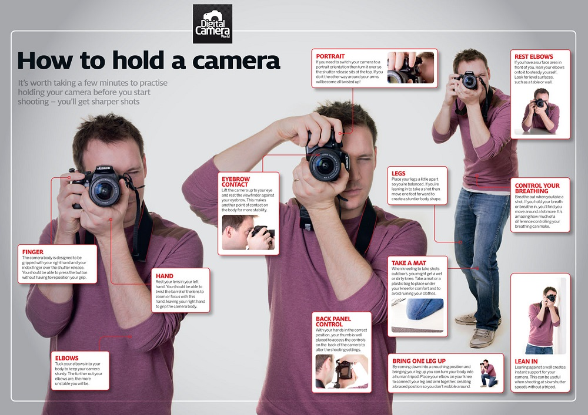

Tips and Techniques

Capturing great photographs requires more than just a high-quality camera. It demands skill, creativity, and an understanding of various shooting techniques. Whether you're an amateur photographer or a seasoned professional, the following camera shooting tips and techniques will help you improve your skills and take your photography to the next level.
Composition: One of the fundamental aspects of photography is composition. Pay attention to the placement of your subjects, use the rule of thirds, leading lines, and framing techniques to create visually appealing images. Experiment with different angles and perspectives to add depth and interest to your shots.
Lighting: Understanding and controlling light is vital in photography. Observe the quality, direction, and intensity of light in your scene. Golden hour (sunrise or sunset) and blue hour (dusk or dawn) are optimal times for capturing stunning natural light. Experiment with different lighting setups, such as backlighting, side lighting, and diffused light, to create different moods and effects.
Exposure: Mastering exposure is crucial for achieving well-balanced images. Learn to control the exposure triangle—ISO, aperture, and shutter speed—to achieve the desired brightness and sharpness. Utilize exposure compensation to adjust the overall exposure based on the specific lighting conditions.
Focus: Proper focusing ensures sharp and clear images. Understand the different focus modes available on your camera, such as single-point AF, continuous AF, and manual focus. Use autofocus for moving subjects and manual focus for more precise control. Consider using focus peaking or focus assist tools to ensure critical areas are in focus.
Depth of Field: Manipulating the depth of field can greatly enhance your images. A shallow depth of field, achieved by using a wide aperture (low f-stop), creates a blurred background and isolates the subject. On the other hand, a deep depth of field, achieved with a narrow aperture (high f-stop), keeps both the foreground and background in focus.
Shutter Speed: The choice of shutter speed determines the amount of motion blur in your images. Fast shutter speeds freeze action, while slow shutter speeds create motion blur. Experiment with different shutter speeds to capture dynamic or ethereal effects, depending on the scene and subject.
White Balance: White balance ensures accurate color representation in your photographs. Use the appropriate white balance setting for the lighting conditions or adjust it manually to achieve the desired color temperature. Shooting in RAW format provides greater flexibility for adjusting white balance during post-processing.
Framing and Leading Lines: Utilize natural elements or architectural structures to frame your subject creatively. Leading lines, such as roads, fences, or rivers, can guide the viewer's eye and add depth to the composition. Experiment with different framing techniques to create more engaging and visually appealing images.
Use Tripods and Stabilization: Tripods are invaluable tools for achieving sharp and steady shots, especially in low-light situations or when shooting long exposures. Invest in a sturdy tripod and consider using image stabilization techniques, such as optical or in-body stabilization, to minimize camera shake.
Post-Processing: Editing plays a crucial role in enhancing and refining your images. Familiarize yourself with post-processing software like Adobe Lightroom or Photoshop to adjust exposure, contrast, colors, and other elements. However, strive for a balance between enhancing your images and maintaining their natural look.
Remember, practice is key to developing your skills as a photographer. Experiment with different techniques, have patience, and learn from your successes and failures. Embrace your creativity, explore different genres, and develop your unique style. With dedication and a solid understanding of camera shooting tips and techniques, you can create stunning and impactful photographs.